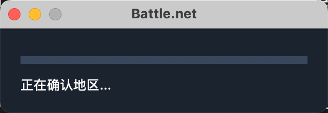

解决战网卡45%、炉石匹配成功界面停滞、换外服报错代码2400三个问题
📑 目录
炉石匹配成功界面停滞
问题描述： 自从暴雪国服回归后，我发现炉石传说亚服不用VPN居然能正常登录正常玩，但是开启VPN后却反而玩不了了，这很奇怪，会停滞在匹配成功即将进入游戏的界面，无法取消匹配也无法进入游戏。此时的网络环境是正常的能访问YouTube的，也能访问炉石商城买东西卡牌合成，但就是无法成功进入任何对战。不知道我遇到的这个现象是否普遍。下面是解决方法。 环境： macbook pro m3 macos15.0.1 分析： 通过命令行工具lsof看了一下hearthstone和[http://battle.net](https://link.zhihu.com/?target=http%3A//battle.net)跟服务器端口的连接情况，我发现在匹配成功进入游戏的时候hearthstone会多出来一个指向IP地址158.115.207.x的端口，而且这个端口是`CLOSE_WAIT`状态，表示对方服务器关闭了连接，但本地服务还没有关闭它。猜测应该是暴雪服务器监测到了访问通过VPN转发所以中断了连接。所以游戏才会一直停滞在匹配成功即将进入游戏的界面。
Hearthsto 23024 xx 40u IPv4 0x603d6899435c117 0t0 TCP 198.xx.0.1:52173->158.115.207.177:battlenet (CLOSE_WAIT)
解决：
既然不用VPN能玩，那在类似shadowrocket这样的代理软件中添加几条规则就行。步骤：shadowrocket-配置文件-规则-加号-类型选择ip-cidr，策略选择direct，域名选择158.115.207.0/24 *注意这个域名应该不是固定的，如果变动可以通过监视工具自己修改。
ip-cidr direct 158.115.207.0/24
并按照相同的步骤再添加或者修改规则。
DOMAIN-KEYWORD - porxy -hearthstone
DOMAIN-KEYWORD - porxy -battle
DOMAIN - direct -battle
战网卡45%
>>>解决暴雪国服停止运营后，安装包在国内会因为DNS导致的游戏无法安装，卡在45%进度的问题
//第一步：
rm -rf ~/Library/Preferences/com.blizzard.*
#彻底卸载本地的暴雪战网相关文件，注意blizzard文件的路径有可能会在/Users/Shared
rm -rf ~/Library/Preferences/net.battle.*
#彻底卸载本地的暴雪战网相关文件，注意blizzard文件的路径有可能会在/Users/Shared
#当blizzard文件的路径在/Users/Shared时，可以手动打开访达-进入MacintoshHD-用户-共享-删除battle和blizzard相关文件
//第二步：
cd ~/Downloads
#打开下载文件夹
###记得将下载好的Battle.net-Setup.app文件放入downloads目录然后再运行下面的代码
//第三步：打开安装器，然后赋予程序指定的参数，其中的‘Battle.net-Setup.app’字段替换为自己的按照器文件名，有可能是‘Battle.net-Setup-CN.app’或者‘Battle.net.app’。
**./Battle.net-Setup.app**/Contents/MacOS/Battle.net-Setup -Setup.app --args --locale=enUS --region=US
./Applications/Battle.net-Setup.app/Contents/MacOS/Battle.net-Setup -Setup.app --args --locale=enUS --region=US
//如果是通过国内战网官网下载，用下面Battle.net-Setup-CN.app这个，或者自己修改路径。
**./Battle.net-Setup-CN.app**/Contents/MacOS/Battle.net-Setup --args --locale=enUS --region=US
//第三步简化版（已弃用）：
open -a ~/Downloads/Battle.net-Setup.app --args --locale=enUS --region=US --session=
open Downloads/Battle.net-Setup.app --args --locale=enUS --region=US
#同理，其中的‘Battle.net-Setup.app’字段替换为自己的按照器文件名，有可能是‘Battle.net-Setup-CN.app’或者‘Battle.net.app’
///疑难杂症处理
ping tw.patch.battle.net
#测试本地与台服服务器的网络连接情况
sudo vim /etc/hosts
#打开网络映射配置文件查看目前服务器的IP地址和网络配置
ping cn.patch.battlenet.com.cn
#测试本地与国服网络连接
切换外服登录时报错2400
解决登录过国服战网之后再登外服，会报错网络问题（MacOS、VPN环境下）
需要在每次启动战网前运行下面的代码，将登录器从国服修改到外服，然后确保战网走VPN。
//文件所在路径需要自己修改
/Applications/Battle.net.app/Contents/MacOS/Battle.net --args --locale=enUS --region=US
rm -rf ~/Library/Application\ Support/Battle.net
//有意思的事情是，从外服换到国服并不会报网络错误，因此从外服换国服会报错很明显是有人在人为为干预（锁国服）
//记得在VPN中把炉石传说的端口设置为代理
